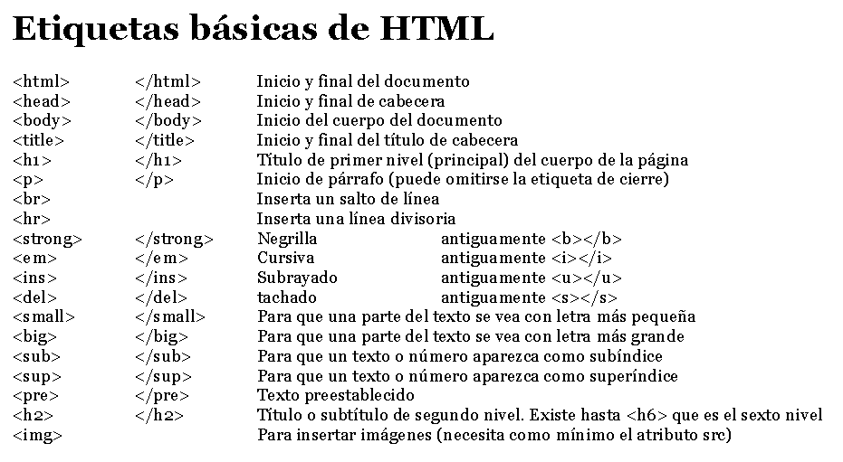

El HTML nace en 1980 cuando el científico Tim Berners-Lee propuso un nuevo sistema de hipertexto para compartir documentos.
Surge ante la necesidad de encontrar documentos que te aporten información relacionada con el tema que necesitas y que, además,
puedas acceder a ellos desde cualquier parte del mundo.
El Lenguaje de Marcado de Hipertexto (HTML) es el código que se utiliza para estructurar y desplegar una página web y sus contenidos.
Por ejemplo, sus contenidos podrían ser párrafos, una lista con viñetas, o imágenes y tablas de datos. Como lo sugiere el título, este
artículo te dará una comprensión básica de HTML y cúal es su función.
Estructura Basica de Html

De esta manera puedes estructurar tu página web con tantos elementos y etiquetas que consideres necesarios. Si has cometido
algún error en la apertura o cierre de alguna etiqueta podrás darte cuenta al visualizar una página de error, que el navegador
se quede en blanco o simplemente al no ver configurado ningún cambio.
Para hacer una estructura HTML es necesario crear un documento HTML con la extensión .html.
Etiquetas vasicas de Html
¿Qué son las etiquetas HTML?
El lenguaje HTML está compuesto por etiquetas. Estas son fragmentos de texto rodeados por corchetes cuyo uso es escribir el código HTML. Se delimitan usando paréntesis angulares (“< >”) de la siguiente forma:
Las etiquetas se utilizan para describir algo que se quiere representar en una página web, su apariencia..
